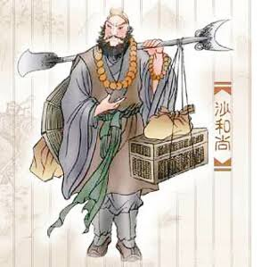

ซัวเจ๋ง
ประวัติ
เดิมคือ "ขุนพลม่านม้วน" ผู้พิทักษ์เสด็จแม่ซื่อหวังมู่บนสวรรค์ แต่ทำแก้วคริสตัลในงานเลี้ยงสวรรค์ตกแตก จึงถูกลงโทษให้ตกมารับกรรมในโลกมนุษย์ กลายเป็นปีศาจพรายน้ำ ณ แม่น้ำหุบเขา 流沙 (แม่น้ำทรายไหล) คอยจับคนกินเป็นอาหาร จนกระทั่งพระโพธิสัตว์กวนอิมชี้แนะให้มาบวชเป็นศิษย์น้องสาม ซัวเจ๋งเป็นตัวแทนของความจงรักภักดี ซื่อสัตย์ อดทน คอยแบกสัมภาระ และรับหน้าที่ดูแลอาจารย์อย่างเงียบๆ เสมอ
